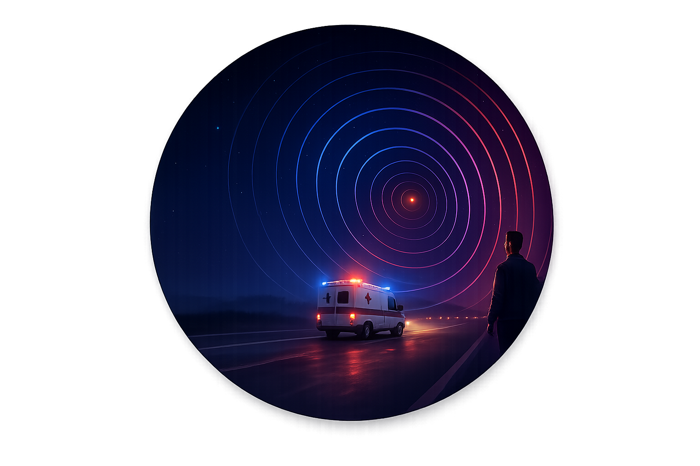
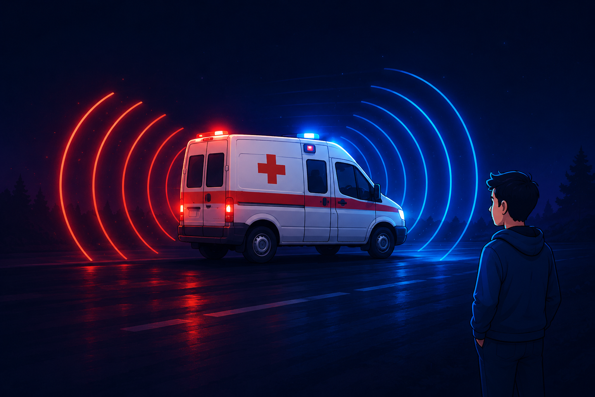
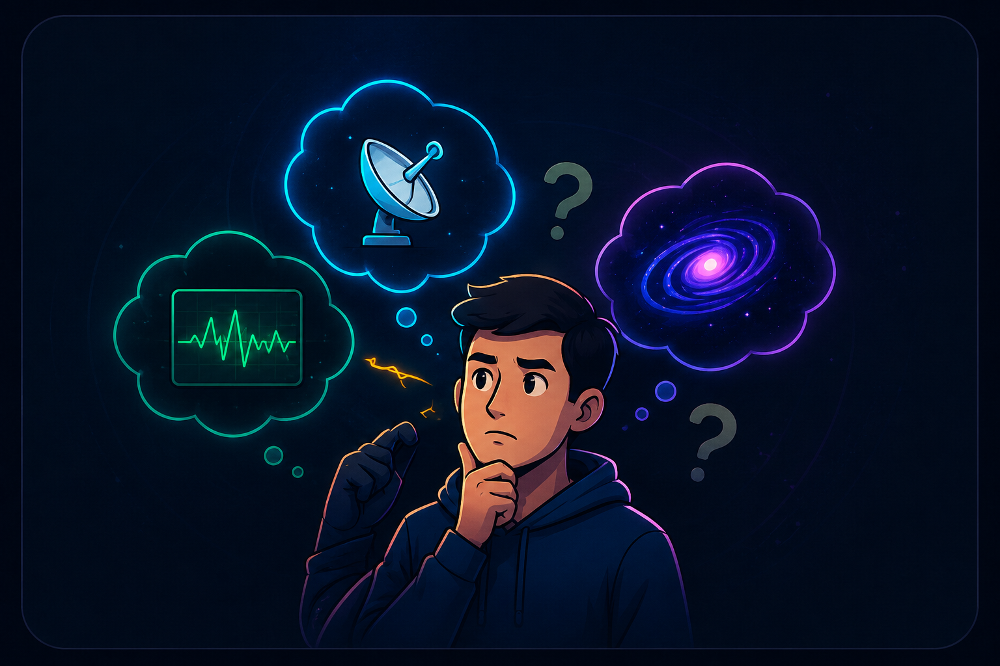
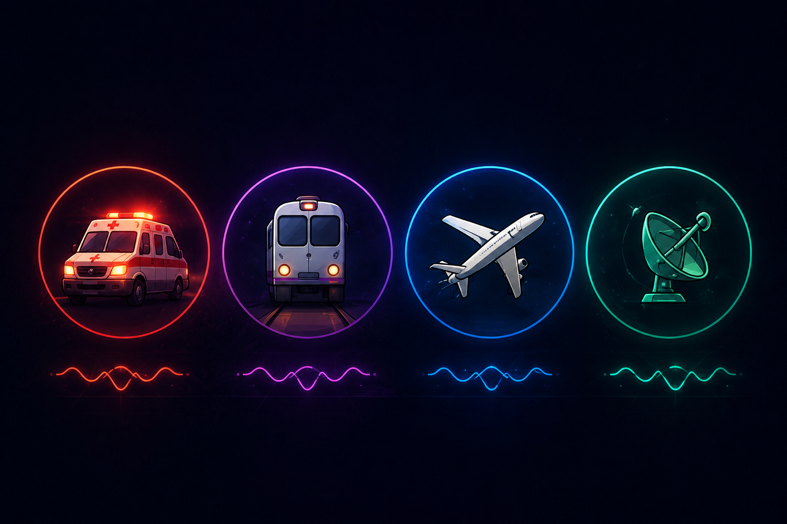
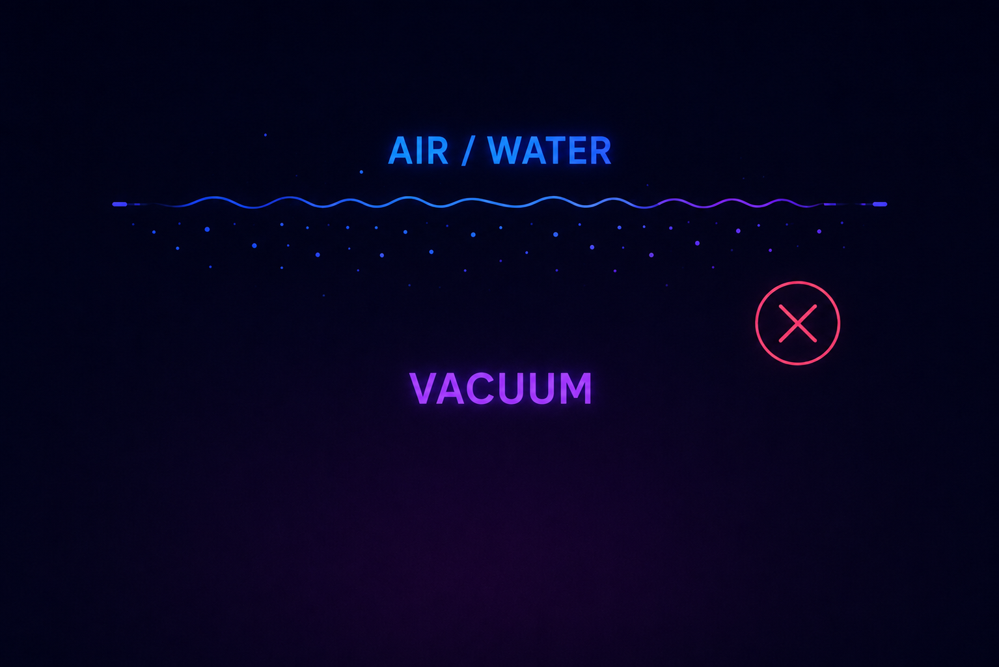
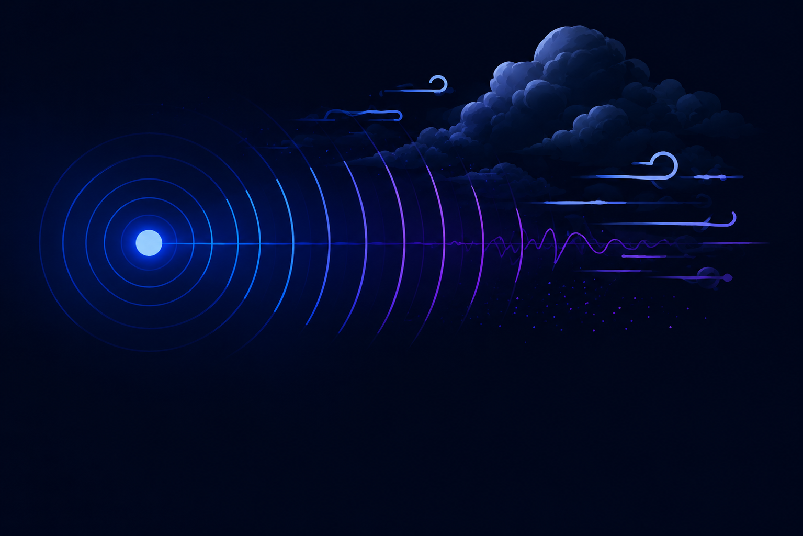
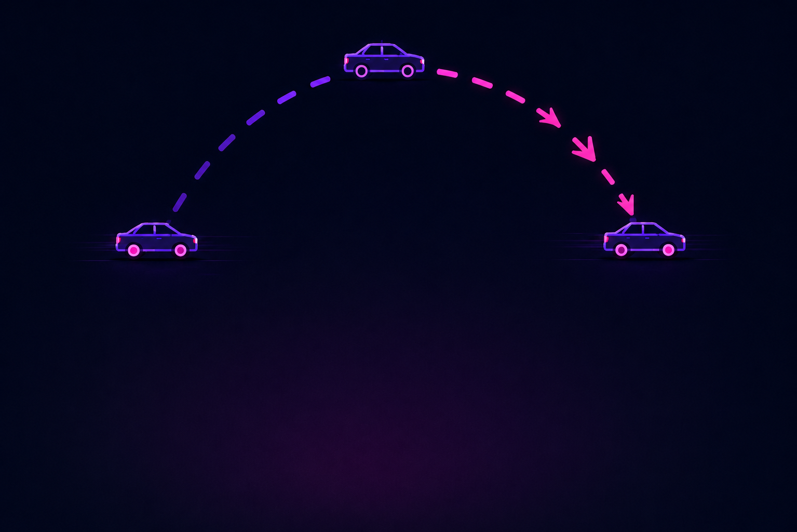

A shift hiding
in plain hearing
First explained by Christian Doppler in 1842, this effect shows up every time you hear a siren pass by, and it works the same way for light, water, and radar waves too.

What Is It?
The change in the frequency of a wave, whether sound, light, or radio, that an observer perceives when the source, the observer, or both are moving relative to one another.
Change in frequency
Why Does It Occur?
Motion changes the spacing between successive wavefronts, compressed ahead of a moving source and stretched out behind it.
Relative motion
Why It Matters
It's one of the few physics ideas you use daily without noticing, and it underpins radar, ultrasound, and how we measure the universe.
Powerful real-world impact
Where You'll Hear It
Sirens, trains, radar guns, weather forecasting, and medical ultrasound all rely on it, explored in detail further down this page.
All around youHear Motion.
See Physics.
Before exploring the interactive simulations, experience the Doppler Effect in the real world.
Watch how an ambulance siren changes in perceived pitch as it approaches, passes by, and moves away from a stationary observer.
Notice the sound becoming higher during approach and lower after passing.
Play with sound enabled for the best experience.
Explore Interactive Cases
Explore ten real-world Doppler Effect scenarios through interactive visual simulations. Select any case to understand how the relative motion between the source and observer changes the observed frequency.
Applications &
Examples
Discover how the Doppler Effect extends beyond the classroom into everyday life, modern technology, medicine, transportation, and weather science. Explore five real-world applications that demonstrate how changes in frequency help us understand and measure motion.
Limitations of
the Model
Every scientific model has boundaries. These limitations define where the Doppler Effect remains accurate and where more advanced models become necessary.
If these assumptions fail, results become inaccurate.
Assumes Low Speed
The formula assumes source and observer speeds remain much smaller than the speed of sound.

Medium Required
Sound requires a physical medium and cannot travel in vacuum.

Wind Interference
Wind changes the effective speed of sound and introduces measurement error.

Complex Motion
Curved motion and acceleration violate the simple straight-line assumptions.
The Journey Ends. The Understanding Begins.
You explored how motion changes the frequency of sound through interactive simulations and real world examples.
From stationary objects to moving sources and observers, every case revealed the same physical principle.
You discovered how the Doppler Effect is used in transportation, weather forecasting, medical imaging, and speed detection.
Every situation may look different, but they all follow one simple idea.
Motion changes how waves are observed.
The Doppler Effect is now a concept you can visualize, understand, and confidently apply.
One Principle. Infinite Applications.
Every wave tells a different story only motion changes the language.